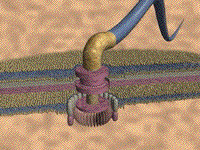
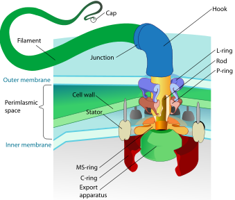

Was Evolution God's Idea For Begetting the Human Race?
The Miracle of Natural Selection
What piece of work is a man! how noble in reason!
how infinite in faculty! in form and moving how
express and admirable! in action how like an angel!
in apprehension how like a god! the beauty of the
world! the paragon of animals! —Hamlet
Religious fundamentalists cannot be blamed for their wonder at the Creation and their skepticism about evolution. For evolution is itself nothing short of a miracle. This powerful engine of species generation is, like most laws of nature, both elegant and simple, and yet so subtle it eluded discovery until modern times. McLuhan's abiding faith in 'the harmony of all being' and 'the principle of intelligibility' and his conviction that all things were real, coherent and ultimately knowable, are based in his religion, but derive their cogency from evolution. For if, indeed, God does exist, evolution was his instrument for begetting the human race. And man owes not only his physical existence, but his harmonious relation to the universe, to the magic of genetic mutation and natural selection.
Of course religious fundamentalists argue that evolution is a purely mechanical explanation promoted by a materialistic philosophy of life. But that is not so. After all, if man is a product of natural selection, so are his ideals, dreams and reverence for the eternal verities. Moreover, just as man is the spiritual benefactor of evolution, so are his societies. For any society that does not aspire to truth, beauty and goodness (or pray to a benevolent deity), eventually self-destructs, i.e. is selected out, including every fascist society dating from the ancient Mesopotamians. Interestingly, creation 'scientists' can see intelligent design in the products of mutation and natural selection, but no grand design in the evolutionary process itself. How odd they that do not see God's hand here! Anyone searching for evidence of God or teleology in the universe, for the divine footprint in the sand, need look no further than the majesty and agency of evolution.
One organ Creationists cite as too complex to have originated through evolutionary processes is the human eye. But once the morphology, cellular structures, and stages of its design are understood, its evolutionary origins appear to be self-evident and indeed inevitable.
Another example of irreducible complexity creationist like to cite is the bacterium flagellum.


According to the creationists, the ion motor that drives the flagellum of this bacteria is too complex for it to have evolved incrementally by natural selection because the subtraction of any one of its 30 proteins would have rendered it nonfunctional. But it was subsequently discovered that the syringe used by the bubonic plague bacteria to inject its toxin into host cells was composed of proteins directly homologous to the proteins in the basal portion of the bacterial flagellum, providing an intermediate platform from which the flagellum could have evolved.